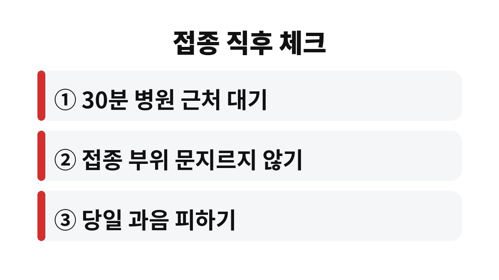
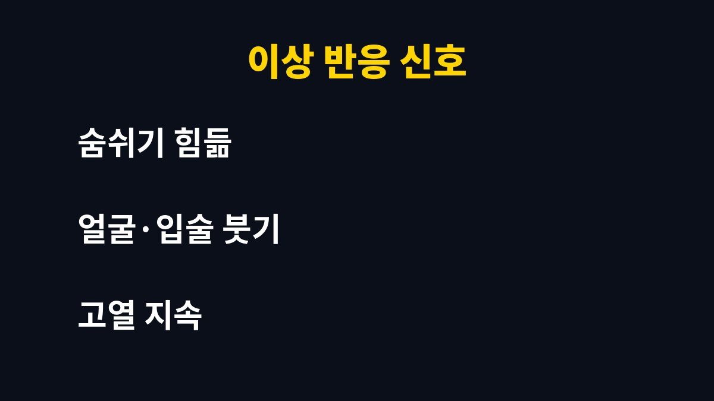

독감 예방접종 후 가장 먼저 지킬 것은 접종 뒤 30분 정도 병원 근처에서 머물며 몸 상태를 살피는 일이다. 접종했다면 샤워나 운동, 술자리를 바로 해도 되는지 궁금할 텐데, 의외로 많은 사람이 헷갈리는 부분이다.
예방접종 직후에는 드물지만 급성 알레르기 반응이 나타날 수 있다. 이런 반응은 대부분 접종 후 짧은 시간 안에 나타나는 경우가 많아서 접종 뒤 30분 정도는 병원이나 접종 장소 근처에서 쉬는 것이 권장된다.
숨쉬기가 답답하거나 얼굴과 입술이 붓거나 온몸에 두드러기가 번지면 바로 의료진에게 알려야 한다. 바쁘다는 이유로 접종하자마자 자리를 뜨는 습관은 가장 후회하기 쉬운 선택이다.
특히 이전에 백신을 맞고 이상 반응을 겪은 적이 있거나 알레르기 체질이라면 접종 전에 의료진에게 미리 말해 두는 편이 안전하다. 몸이 아프거나 열이 있는 날은 접종 일정을 조정할 수 있는지도 상담해 보면 좋다.
접종 당일 샤워는 대체로 가능하다고 안내된다. 다만 주사를 맞은 부위를 세게 문지르거나 때를 미는 것은 피하는 편이 좋다. 접종 부위는 작은 상처가 난 상태이므로 가볍게 씻고 물기만 톡톡 닦아 주면 충분하다.
뜨거운 물에 오래 들어가는 사우나나 장시간 목욕은 어지럼증이나 컨디션 저하를 키울 수 있어 접종 당일에는 쉬어 가는 쪽이 낫다. 접종 부위를 주무르거나 마사지하는 것도 굳이 할 필요가 없다.
접종 당일 과음은 피하는 것이 좋다. 술은 몸의 컨디션을 떨어뜨리고, 접종 후 나타날 수 있는 미열이나 피로감과 헷갈리게 만들 수 있기 때문이다. 이상 반응인지 숙취인지 구분하기 어려워진다는 점이 가장 큰 함정이다.
운동도 마찬가지다. 가벼운 산책은 괜찮지만 땀을 뻘뻘 흘리는 격한 운동은 접종 당일에는 쉬어 주는 편이 안전하다. 주사를 맞은 팔을 무리하게 쓰면 뻐근함이 오래갈 수 있다.
접종 부위가 뻐근하거나 살짝 붓고 열감이 느껴지는 것은 흔한 반응이다. 대부분 며칠 안에 좋아지니 너무 걱정하지 않아도 된다. 다만 증상이 점점 심해지거나 오래 이어진다면 진료를 받아야 한다.
접종 후 항체가 충분히 만들어지기까지는 보통 2주 정도가 걸린다고 알려져 있다. 그 사이에 독감 바이러스에 노출되면 걸릴 수 있으므로 접종했다고 안심하고 손 씻기와 마스크 착용을 소홀히 하면 안 된다.
또 독감 백신은 모든 독감을 완전히 막아 주는 방패라기보다 걸리더라도 심하게 앓지 않도록 도와주는 쪽에 가깝다. 접종 후에 열이 나고 근육통이 심하다면 독감 자체일 수도 있으니 병원에서 확인하는 것이 좋다.
부모님이나 만성질환이 있는 가족이 있다면 접종 시기를 함께 챙겨 주는 것이 좋다. 접종 후 하루 이틀은 수분을 충분히 마시고 푹 쉬게 해 주면 컨디션 회복에 도움이 된다.
| 접종 직후 | 30분 정도 근처에서 대기하며 몸 상태 살피기 |
| 당일 | 가벼운 샤워는 가능, 과음과 격한 운동은 피하기 |
| 이후 | 항체가 생기는 약 2주 동안 손 씻기와 마스크 지키기 |


오늘 내용 중 몰랐던 부분이 있었는지 댓글로 남겨 주면 좋겠다. 건강 정보가 도움이 되었다면 구독으로 다음 글도 챙겨 보기를 바란다.
※ 이 글은 일반적인 건강 정보이며 개인의 증상과 상태에 따라 다를 수 있으므로 정확한 진단과 치료는 전문의 상담이 필요하다.